第4章 高潮反转：尖峰之后出现反向尖峰¶
第 4 章 高潮反转：尖峰之后出现反向尖峰
市场总是在尝试突破，然后又尝试使每个突破失败。这是所有交易最根本的方面，也是我们所做的一切事情的核心。第一条趋势棒都是一次突破，它可能拥有坚持到底并成功，也可能失败并引起反转。甚至一个高潮反转（比如一个 V 形底）也只是由一个突破和接下来的一个失败的突破构成的。交易者在研判一个突破是否会成功或失败方面做得越好，那么他作为交易者的生活就越好。突破会成功吗？如果会成功，那么就准备在突破方向上交易。如果不成功（并且成为一个失败的突破，即反转），那么就准备在相反的方向交易。所有交易归根结底都是在做这种决定。
很多人把高潮的定义限制为趋势终点处的迅猛运动，然后是一波反方向的迅猛运动，结果使趋势反转。对于交易者来说，一种更为宽泛的定义将更为有用：任意类型的非持续行为都应被视作一种高潮，无论之后是否形成反转。那么高潮到底能有多小呢？正如在第一本书中的第 2 章所提到的，每一条趋势棒都是一个高潮，尽管大部分趋势棒并不引起高潮反转。任意趋势棒或任意的一系列趋势棒，当棒线拥有相对较大的幅度时，都是高潮，尽管大部分束。甚至一条大型趋势棒也可成为一个高潮。大部分高潮之后通常是一段持续一棒或更多棒的交易区间，而不是一个反向的尖峰，趋势常常恢复而不是反转。高潮反转是随后出现一波迅猛的反向运动的高潮，都是对某个价位的失败的突破。举例说明，如果多头市场中有一段交易区间，形成一条从顶部开始的空头下跌腿，那么这条下跌腿就是一条空头通道，所以是一个多头旗形。如果市场形成一条或多条多头趋势棒向上突破那条通道，那么就是对该多头旗形的突破。如果市场随后向下反转，即便反转是从一个更低高点开始（买进高潮没有向上突破交易区间），那么这仍然是一个高潮反转。当高潮正处于高潮运动状态时，基本面交易者常常认为市场是处于拥挤交易状态，也就是说他们认为太多人已经建仓，所以可能没有剩下多少交易者继续推动市场在趋势方向上进一步运动。举例说明，如果市场正呈抛物线形上涨，那么基本面分析师常常说，这是拥挤交易，他们只准备在回撤买进。大部分人不会建议做空，尽管他们认为即将出现一波重要的回撤。买进高潮的其他实例包括 2006 年的房地产板块泡沫，2000 年的科技股灾难，以及 1637 年的郁金香狂热摂。它们都是投资中博傻理论摂的实例——高价买进，预期比你傻的某个人甚至会在更高价位从你那里买走，使你离场获利。一旦再没有傻瓜，市场就只有一个方向可走，它常常会向那个方向快速运动。中国和巴西可能正在形成泡沫，因为他们（的经济）看起来是以一种不能持久的步伐在增长。在这一点处，动能交易者们可能是增长的主要贡献者，也就是说市场的步伐并不是充分地以基本面为基础。一旦获利了结者进入，反转将会又快又深。当投资者们试图以最小利润离场、希望避免大幅亏损时，他们变得惊慌失措，任意高潮处都是如此。
有时，当市场处于一轮强趋势中时，会形成一条波幅和实体都超大的棒线，可能在一个极点附近开盘，收盘于另一个极点附近。这要么是一个高潮，要么是一个突破。举例说明，假定市场正在下跌，然后一条空头趋势棒形成，在其最高价附近开盘，收盘于最低价附近，实体和波幅都是那么下跌运动中最大的，或许是很多空头趋势棒幅度的两倍。那一棒可能代表着最后绝望的多头正急于离场，他们在市价卖出，而不是等待回撤。他们最终放弃，希望在任意价位离场。一旦最后一位多头离场，就没有人再做空了。机构不在此处做空，因为他们已经在高得多的价位做空。实际上，他们正在那一棒底部将自己的空头头寸获利了结，而且很多人可能会在那里做多。一旦交易者们感觉到没有明显的坚持到底卖出，市场可能会在接下来的一两棒内向上快速反转。然而，如果那条大型空头趋势棒是突破了一个或多个支撑的突破棒，那么在尝试再次反转前，它可能产生一波向下的测量运动。
高潮的一个重要组成部分是真空效应，真空效应是由反向交易者的临时缺席而造成的。举例说明，如果市场正向着一条多头通道的顶部加速上涨，那么将有机构空头认为市场不久将会反转，但是市场很可能首先要向上突破趋势通道线。当他们认为市场不久将会向上超越趋势通道线时，他们为什么要选择在市场向那条线的上涨过程中做空呢？当他们认为市场不久将涨得更高，他们能够在一个更好的价位做空时，现在做空是没有道理的。那么他们将做什么呢？他们选择等待。对于强势多头来说也是如此。他们正准备部分或全部获利，但是，如果他们认为市场不久会再上涨一点，那么在市场到达他们所认为的市场很可能不会超越的阻力区之前（至少当时不会超越），他们将不会卖出。也就是说，一些非常强势的空头没在做空，一些非常强势的多头没在卖出他们的多头头寸，卖出操作的缺乏产生一个真空，吸引市场向着空头感觉存在做空价值、多头感觉存在获利了结价值的价位上涨。侦测动能的程序在一棒的早期侦测到这一点，快速重复买进，直到动能放缓。因为这些买进程序将会一直买进，直到最后一个跳动，相对来说没有对手，所以市场将以一个强多头尖峰快速上涨，可能持续若干棒。但是，一旦市场到达某个价位，空头感觉存在价值，多头感觉市场在回撤前很可能不会再大幅上涨，比如向上超越空头通道线若干个跳动，接下来将会发生什么呢？这些巨型机构空头将开始持续重仓做空，强势多头将会抛出他们的多头头寸，因为他们感觉这一价位存在巨大价值。买进程序侦测到动能的损失，抛出他们的多头头寸。由于那一价位对于做空和获利了结都存在非常大的价值，所以它不可能持久，于是多头和空头利用这一短暂的机会非常激进地卖出。由于强势多头和空头都预期价格下跌，所以接下来价格下跌。当所有重要交易者卖出，而不再有买进时，市场向下反转，至少持续 10 棒，形成一两条腿形。在那一点，他们将决定回撤是否已经结束。如果他们认为回撤已经结束，那么多头应该买回他们的多头头寸，空头应该以刮头皮交易了结他们的空头头寸，否则，他们认为抛盘还会继续。
P74
在市场快速上涨的过程中，弱势交易者们的做法刚好相反：在边线观望的弱势多头最终买进，弱势空头回补他们的空头头寸，他们都对不现实的另一条大型上涨腿感到恐惧。老手们所做的刚好与机构所做的相同。举例说明，他们可以在那条强多头趋势棒的收盘、在它的高点上方、或者在随后一两棒的收盘价做空。如果他们真的做空，那么他们应该使用与那条多头趋势棒一样高的止损。如果他们等待一条空头反转棒，并且在它的低点下方使用止损单做空，那么他们所承担的风险就是市场向上超越信号棒的高点。或者，他们可以使用更宽的保护性止损，允许再出现一个微型高点，但是，如果那样做，他们需要减小自己的头寸规模。
在多头尖峰期间，强势多头不断买进，因为他们也认为市场将继续上涨。然而，在某个点处，他们知道市场已经走得太远、太快，将会出现一个短暂的机会，他们可以抛出自己的多头头寸，获得大把的利润。如果他们等待太长时间，那么回撤可以变成反转，他们将会错过在非常高的价位卖出的机会。于是他们抓住这个短暂的机会抛出自己的多头头寸。他们积极地获利了结加上机构空头的积极做空，使得市场以非常快的速度下跌，持续一两棒甚至更长时间，这将制造一个高潮反转。多头试图在更低价位买进，希望反转将会失败，但是，如果他们不能推动市场向上回转，那么他们将再次抛出自己的多头头寸。此时，在较高价位做空的空头继续做空，他们与多头在交易区间内激战，目的是争夺随后的通道的方向。如果空头获胜，那么通常会形成一轮尖峰和通道空头趋势，尖峰是从高潮顶开始的快速下跌。如果多头获胜，那么通常会形成一轮尖峰和通道多头趋势，尖峰是截止买进高潮顶部的快速上涨。
尖峰是对顺势交易者和逆势交易者力量的测试。多头趋势由一系列更高高点和更高低点构成，更高高点和更高低点都可以由尖峰制造。多头趋势中，如果市场出现一个上涨尖峰，然后又以下跌尖峰的形式下跌，那么市场很可能测试并趋势多头尖峰的顶部，但是不会回来测试空头尖峰的底部。那个多头尖峰只是多头趋势中的另一条上涨腿，下跌尖峰通常只是演变为多头旗形和一个更高低点，一旦多头趋势恢复，很可能不会被测试。对于空头趋势也同样正确，空头趋势是由一系列更低高点和更低低点构成的。最近的新低，无论是否表现为尖峰的形式，在任意回撤之后，都很可能被测试并超越。任意反弹，无论表现为强多头尖峰还是平缓地上涨，都很可能演变为空头旗形和另一个更低高点，通常不会得到测试。有一种广泛认同，但并不正确的观点，就是最强的反弹出现在空头趋势期间，最强的下跌出现在多头趋势期间。虽然这一观点并不正确，但重要的是认识到逆势尖峰可以异常强，令很多交易者认为趋势已经反转。所有尖峰，无论是上涨尖峰还是下跌尖峰，无论是形成于多头趋势、空头趋势还是交易区间内，都是对逆势交易者和顺势交易者决心的测试。回撤常常接近于令总在场内头寸向反方向翻转，但是却没有足够的坚持到底。强势交易者们喜欢这些反转尝试，因为他们知道大部分反转尝试都将失败。每当逆势交易者们能够做出反转尝试时，顺势交易者们就会介入，强烈抗争那种反转尝试，而且通常会获胜。他们把这些迅猛的逆势运动看作在很棒的价位顺势入场的大好机会，那种机会很可能只会短时存在，很快变成趋势中的一个尖峰回撤。
每一波回撤都是一轮小型趋势，每一轮趋势只是更高时间框架图表上的一波回撤。这包括 1987 年和 2008-2009 年的股市崩盘，它们只是向月线图上的多头趋势线回撤。每一个逆势尖峰都应被视作一波真空效应回撤，很多回撤都以尝试令趋势反转的、非常强的趋势棒结束，或者在那些趋势棒出现后不久结束。举例说明，如果 5 分钟图上的多头趋势中出现一个迅猛的空头尖峰，然后市场突然反转进入一条多头腿，那么低点处便存在一个支撑区，无论你事先是否能够看出。多头闪在一旁，直到市场到达某个价位，在那个价位，他们认为存在价值，在那个很棒的价位买进的机会是短暂的。他们知道大部分反转尝试失败，而且很多反转尝试拥有强空头趋势棒。他们打赌坚持到底卖出不会出现，而交易者们需要看到坚持到底卖出才能自信地认为总在场内头寸已经反转，于是他们在那一棒的收盘价和下一棒正在形成时积极买进。由于再没有人做空，所以市场迅速上涨若干棒，回撤结束，趋势恢复。聪明的空头注意到那个磁力位，他们把它用作获利了结空头头寸的机会。
P75
市场总是尝试反转（尽管大部分尝试失败），而成功反转需要坚持到底以说服交易者们总在场内方向已经翻转。这些尖峰接近于形成具有说服力的翻转，但是没有形成足够的坚持到底。结果是它们使得交易者猜测总在场内头寸是否将要翻转，但是当坚持到底不足时，他们认为反转尝试将会失败。然后，多头把下跌尖峰看作在很棒的价位买进的短暂机会。在空头趋势棒底部和较高价位附近做空的空头，也认识到反转尝试正在失败，于是他们快速买回他们的空头头寸，闪在一边，直到他们看到另一个尝试再次控制市场的机会。结果市场在 5 分钟图上形成一个底部。像所有底部一样，那个底部出现在某个更高时间框架上的支撑位，比如多头趋势线、均线、或者大型多头旗形底部的空头趋势通道线。重要的是牢记，如果 5 分钟图上的反转很强，那么交易者们会根据那个反转买进，而不管是否在日线图或 60 分钟图上看到支撑。另外，即便在更高时间框架上看到支撑，也不要在那个低点买进，除非 5 分钟图上有证据表明市场正在在形成一个底部。也就是说，他们不需要观察很多不同的图表来寻找那个支撑位，因为5分钟图上的反转告诉他们它就在那里。如果他们能够跟踪多重时间框架，那么他们将在市场到达支撑和阻力位前看到那些价位，这能够提醒他们当市场到达磁力位时在 5 分钟图上寻找交易架构；但是，如果他们只是细心地跟踪 5 分钟图，它将告诉他们所需知道的一切。
股票交易者们按照惯例会在多头趋势的强势空头尖峰处买进，因为他们把那种尖峰看作是很有价值的机会。虽然他们通常会在买进前寻找强势价格行为，但是他们常常在快速抛售底部买进他们喜欢的股票，尤其是在多头趋势线所在的区域或其他支撑区，比如交易区间的低点，即使市场尚未向上反转。他们认为市场是因某些新闻事件临时性地、非正确地低估了那只股票的价值，而他们买进它是因为他们不相信它将在较长时间里保持被低估的状态。他们对于该股再次出现的小幅下跌并不在意，因为他们不相信自己能够准确地捕捉到回撤的底部，但是他们希望在抛售期内入场，因为他们相信市场很快便会改正其错误，该股不久便会反弹。
在交易者眼中，高潮就是已经走得太远、太快的任意市场。它是一条趋势棒或者一系列几乎没有重叠的趋势棒，它可能在任意时间出现，比如作为突破，在趋势的起点，或者在趋势已经运行了很多棒之后。市场在尖峰后暂停，然后趋势恢复或反转。当出现一个大的尖峰时，如果随后立即出现一个反向尖峰，或者不久之后出现一个反向尖峰，那么市场便是正在尝试反转。当这种情况发生时，市场形成一个高潮反转，它可能是仅在更高或更低时间框架图表上才能看到的一个双棒反转。举例说明，如果一轮多头趋势已经持续了 20 棒，现在形成整轮趋势中最大的多头趋势棒，那么交易者将猜测它是否是趋势的高潮型终点（一个泡沫顶）。如果然后出现一两条强空头趋势棒向下反转，那么空头尖峰便与高潮的最后一条或多条多头趋势棒形成一个双棒反转，无论是否有几棒把最后的多头趋势棒和第一条空头趋势棒分开。在更高时间框架图表上，交易者们看到一个简单的双棒反转。而在更高的时间框架图表上，这将是一条反转棒。只要你明白市场正在做什么，就无需查看若干时间框架图表去寻找完美的双棒反转架构。通过你在眼前图表上所看到的，你知道它是存在的，那就是你交易所需的全部。
当形成第二波和第三波买进高潮，而且高潮之间没有多少调整时，多头和空头都将卖出，这种卖出可能引起一个高潮反转。空头卖出，新建空头头寸，因为他们认为至少会出现一波刮头皮下跌。多头把最后一两条大型多头趋势棒看作获利了结的很棒价位，因为他们认为趋势很可能至少到达一个临时终点，将开始更深的回撤、交易区间、或反向趋势。他们预期市场趋势下跌约 10 棒和两条腿，担心多头趋势已经结束，原来的高点可能不会被超越。当出现第二波买进高潮，然后形成一个反转架构时，多头和空头都在猜测市场是否正在形成一个最终旗形反转（第一波买进高潮之后的回撤是最终旗形）。第三次上推之后，当反转信号棒形成时，交易者们猜测市场是否正形成一个楔形顶。反过来对于连续的卖出高潮也是正确的，当出现连续的卖出高潮时，交易者们寻找可能的最终旗形和楔形底。
当高潮引人注目，大的走势非常正确时，他们会抛出自己的全部多头头寸。如果他们认为市场只会下跌几个跳动，他们是不会退出自己的多头头寸，然后尝试在下方一两个处再次买进的。他们离场的原因是，他们预期自己能够在比离场价位足够低的价位买进，附加的利润将超过交易费。他们还担心市场可能反转进入空头趋势，或者至少进入一波足够深的回撤，于是市场在创出另一个高点之前可能要经过的棒线数将超出他们所愿等待的数量。因为他们不打算在市场显著下跌前买进，所以买家相对缺乏。另外，随着市场下跌，强势空头将会做空。因为卖家多于买家，所以回撤可能非常迅速，甚至成为一个趋势反转。反之，如果市场在他们离场后继续上涨，那么他们将准备在更高价位或回撤时再次买进。如果市场开始向下反转，那么他们将在出现买进架构时在较低价位做多，但通常在大约 10 棒之内不会。如果在10 棒或 20 棒之后没有出现买进架构，那么趋势很可能已经向下反转，那么交易者们将不再准备买进。如果在大约 10 棒和两条腿之后出现一个买进架构，那么多头将恢复自己的多头头
P76
连续高潮增加了调整出现地几率。举例说明，如果出现一波买进高潮（一条名几条大型多头趋势棒），然后只是暂停或回撤，然后是第二波买进高潮，那么形成明显回撤或反转的几率就较高。反之，如果只是出现另一波小幅回撤，然后是第三波买进高潮，那么市场通常至少形成两条腿调整，将至少持续 10 棒。暂停可能是另外任意一条不是大型多头趋势棒的一棒。拥有空头或多头实体的十字星，或者空头趋势棒（波幅可能很小），是最为常见的暂停。暂停棒的高点有时会比第二波买进高潮的高点略高，但其作用仍然是一个单棒最终旗形，在第三波高潮之后引起反转。第三波高潮通常只有一两条大型多头趋势棒。连续的高潮表明，市场可能已经走得太远、太快，多头可能只愿意在大幅下跌后买进。两波连续的买进高潮形成两次上推，实际上是一个双重顶，尽管第二个高点会高出很多。三波连续的买进高潮是一个楔形顶。第二个顶部可能远高于第一个，第三个可能远高于第二个，该形态可能看起来更像是一个多头尖峰，而不是一个楔形。然而，它们具有相同的意义，可以用相同的方式交易。只有经验非常丰富的交易者才应在买进高潮做空，因为那很容易错误地阅读价格行为，结果在一个实际上没有明显高潮或反转形态的强多头尖峰中做空。
如果买进高潮之后的回撤持续了 10 棒或更多棒，而且向下突破了一条多头通道的底部，那么通常已经足以缓和市场的过度状态，因此，如果再出现一波买进高潮，过度感便有所降低，从而不大需要大的调整。有些趋势包含一系列强突破和交易区间。每个突破都是一个尖峰，所以是一波买进高潮，但是随后形成的交易区间表明，强势多头仍然在高点附近买进。也就是说该突破是由强势多头而不是因恐慌而买回他们的空头头寸的弱势空头制造的。市场现在正在做横盘运动，因为强势多头认为它将会走高，而不是等待更低的价格，强势空头没有在积极做空，因为他们太相信市场将会走高。对于他们来说，如果认为能够在大幅上涨后做空，那么现在开始做空是没有道理的。
反转尖峰可能比趋势尖峰大，也可能比趋势尖峰小，如果它较大，那么反转的几率就较高。在反转尖峰的初始运动之后，市场接下来要么暂停、要么形成交易区间，可能非常短暂，也可能持续几十棒。在这段暂停期间，多头和空头都在加大他们的头寸，试图在自己的方向上制造一条通道。举例说明，如果出现一个很强的上涨尖峰，然后又出现一波很强的下跌运动，那么多头和空头都表现得非常激进。下跌尖峰可能与上涨尖峰出现在同一棒内，当那种情况发生时，将形成一条上尾线很长的大型棒。在较小的时间框架上，先是一条或多条多头趋势棒，然后是一条或多条空头趋势棒。或者，下跌尖峰可能出现在下一棒，也可能出现在几棒之后。在较高的时间框架上，该反转可能只是一条多头趋势棒立即跟着一条空头趋势棒，形成一个双棒反转。甚至在更高的时间框架中，该反转可能是一条反转棒。下跌尖峰可能在下一棒或几棒出现坚持到底。无论是否形成坚持到底，市场都会很快暂停或向上部分调整。通常，它将形成一段交易区间，可能很短，也可能持续几十棒。多头正在买进更多，试图推动市场进入一条多头通道，空头正在交易区间内做空，希望制造一条下跌通道。在某个点处，一方获胜，另一方将被迫平仓。如果多头获胜，那么空头将买回自己的空头头寸，增加买压，增加了反弹的力量。如果空头获胜，多头将不得不抛出自己的多头头寸，这将加强空头通道的力量。
当趋势中出现高潮反转时，该反转通常发生于对趋势通道线的突破之后。回到通道的反转常常引起对通道另一侧的测试，常常提供一个很好的交易机会。因此，寻找通道非常重要，如果你看到突破穿过趋势通道线，然后立即出现很强的反转，那么就要准备好反转入场。有时，趋势会在一两棒内恢复，两次突破通道线，那个二次突破也会失败。当那种情况发生时，反转交易甚至更为可靠。
有时，双重顶空头旗形形成于买进高潮后的交易区间区间内，又为入场趋势反转交易增加了一个理由。反之，如果是一个双重底多头旗形，那么它就是一个买进架构。反过来对于买进高潮之后的（形态）也是正确的。如果离开低点的上涨尖峰之后出现一个双重底多头旗形，那么它就是一个买进架构。反之，如果向上反转之后的交易区间形成一个双重顶，那么它就是一个卖出架构。
与之前的趋势相比，引出交易区间的反转腿常常相对较小，但是，它通常会突破趋势线，可能成为反向趋势的第一条腿。尽管如此，它仍然很容易被忽视，因此，每当出现一波高潮运动时，它都是你应该努力去寻找的东西。它可能以低动能状态向原来的极点的缓慢运动，引出一个失败的测试（多头顶部的一个更低高点，或者底部的一个更高低点），也可能继续运动至一个新的极点，可能不出现反转。相反地，如果它真的反转，那么新的反向趋势有时会变得非常强、非常快，常常形成一个尖峰和通道趋势形态。
P77
如果突破棒之后形成内包棒，那么不久常常会形成一条反向趋势棒，构成一个高潮反转架构。像所有高潮反转架构一样，随后形成的通道可能向任一方向，重要的是两种可能都要注意。一旦趋势开始，就要寻找顺势架构。
有时，可能出现一个引人注目的尖峰，然后是一波回撤，然后是通道的开始，不过最后通道失败，反转方向。根据后见之明，那波回撤是反向尖峰，它引出一条反向通道。然而，一旦你识别出它，你就知道有一轮反向的新趋势，你应该尽力选择每一个顺势入场。
在 5 分钟图上，没有对极点明显测试的强高潮反转，一月只有几次。它们有时被称为 V形底或倒 V 形顶，它们只是双棒反转。上涨和下跌尖峰可能包含很多棒，但是总有一个较高时间框架，其中该形态只是一个简单的双棒反转。然而，像任意类型的反转形态一样，大部分形成高潮反转的尝试失败，或者市场至少会在反转前测试尖峰。在多头市场中，大部分尖峰顶会被测试，在空头市场中，大部分 V 形底会被测试，而不管反转看起来有多么情绪化和多么强。这是因为这些高潮是反转尝试，大部分交易者知道大部分反转失败。他们不愿意信任反转，除非它得到测试。
然而，如果有一轮多头趋势和一波在强情绪化下跌尖峰中结束的回撤，那么那个尖峰的低点可能会被测试，也可能不会被测试。一旦每个人感觉到回撤已经结束，趋势正在恢复，那么交易者们就急切地顺势买进。没有犹豫或不确定，不需要测试。这里，它是多头旗形的底部，不是正试图反转进入多头趋势的空头趋势的底部。类似地，当空头趋势的回撤中出现一个尖峰顶时，那个尖峰的顶部可能被测试，也可能不被测试。它只是一个空头旗形的顶部，而不是正处于反转过程中的多头趋势的顶部。
高潮、抛物线、以及 V 形顶和底都有一个共同点，那就是它们的斜率。它们的斜率不是线性的（一条直线），它们是弯曲的，斜率逐渐增加的。在某个点处，市场快速反转方向，通常，最低限度，将会形成一波延长的横盘运动，也可能是趋势反转。所有这些形态只是趋势通道线过冲和反转，因此，应该把它们当作趋势通道线过冲和反转来交易；给它们取个特殊的名字对你的交易成功并无助益。在反转时刻，趋势通道线可能不怎么明显，但是一旦抛物线运动开始，价格行为交易者们就可能不断地绘制和重新绘制趋势通道线，然后寻找过冲和反转。最佳反转拥有大型反转棒，而且最好是二次入场。反转的第一条腿几乎总是会突破趋势线，如果它没有突破趋势线，那么该反转就值得怀疑，更可能形成交易区间或延续形态。在逆势交易时，最好在反向交易前等待原来趋势（极点）的测试。举例说明，与在首次向上反转时买进相比，在一个卖出高潮之后的一个更高低点买进，将是更具获利性的策略，因为太多反转尝试失败了。如果二次入场失败，那么原来趋势很可能至少再运动两条腿。
抛物线运动常常包含三推，所以是楔形顶，我们将在下一章进一步讨论。第三推是一个很强的突破，它快速运动若干棒至一个支撑位或阻力位，那个支撑位或阻力位可能不明显，然后市场停止，可能快速反转。突破超越了一个两推形态，在那个两推形态处，交易者们正预期出现反转，比如交易区间顶部的一个更高高点（或底部的一个更低低点）。记住，一个更高高点只是一波两条腿反弹，因此，向下反转是一个低点 2 做空架构。只有经验丰富的交易者才应尝试在强趋势中逆势而为，甚至是在市场可能正形成一个高潮反转之时。大部分交易者应该等待，看总在场内方向是否已经反转，然后准备反向交易（举例说明，在一波抛物线形多头趋势向下强势反转，现在处于空头趋势中之后）。在第二波或第三波买进高潮之后，如果市场触发高潮反转做空架构，然后反弹超越那个高点，那么当交易者们从交易区间状态切换到多头趋势状态，预期形成向上的测量运动时，有时会出现猛烈的突破。如果市场从一个买进高潮向下反转，那么该反转通常来自某种类型的双重顶，该双重顶可能仅在较小时间框架图表上才能看到，但是可以从 5 分钟图上推断出来。反转可能是迅猛的，或者市场可能回撤若干棒，形成一个旗形，然后该旗形可能向错误的方向（向下，而不是向上）突破，然后市场像上涨时一样快速下跌。趋势线和趋势通道线应该坚守自己的阵地，引导反转离开它们，表明它们成功地把趋势包含在内。有时，某一条线未能挡住价格行为，市场不会停下来并反转测试那条线。趋势线突破与趋势通道线突破具有相反的意义。趋势线突破意味着可能的趋势反转正在进行，但是趋势通道线突破意味着趋势的力量和斜率都已变大。然而，大部分趋势通道线突破在五棒之内失败，然后市场重新进入通道，通常会刺穿通道的另一侧（突破趋势线）。
趋势线突破是趋势反转的第一步，如果突破很强，那么成功测试趋势极点的几率增加。举例说明，在一条空头趋势线突破之后，对低点的测试很可能形成一个更高低点，然后至少形成第二条上涨腿，或者形成一个更低低点，然后至少形成一波两条腿的上涨运动。
对陡峭趋势线的一两棒虚假突破是可靠的顺势形态，因此会吸引大量的交易者。然后，每当某个可靠的形态失败时，通常会有大量被套的交易者。反转运动很可能产生可获利的交易，它可能非常迅猛，结果使得趋势反转。这些反转形态在 1 分钟图上很常见，但是最好不要在1分钟图上做逆势交易，因为大部分反转失败。你应该总是在5分钟图的方向上交易。
P78
每当趋势通道线失败时（市场市场突破它，而不是弹离它），你就应该认为趋势比你所认为的要强得多，你就应该寻找顺势入场。然而，注意趋势通道线突破可能很快失败并引起反转，所以准备好在它开始失败时在任意突破回撤快速离场。
趋势通道线过冲是抛物线形运动，因为为了市场超越趋势通道线，市场正在加速，也就是说它正在形成抛物线。如果市场反转，那么它通常至少持续 10 棒，并形成两条腿回撤。如果市场重新回到通道，那么它通常会刺穿通道的另一侧，超越趋势线，可能成为趋势反转。
传统的技术分析认为重要反转伴随着成交量的异常放大，特别是在市场底部。对于股票，特别是那些成交量较小的股票，那常常是正确的，但是在巨型市场中那并不是一个可靠的信号。在类似 SPY 或电子迷你这样的市场中，大部分重要的向上或向下反转发生时都没有清晰的、可理解的成交量形态，尽管有时市场市场底部会形成巨大的成交量，比如出现卖出真空进入支撑位，空头最后获利了结，多头最后积极买进。当某个底部有一棒或几棒的成交量为近日大多数棒线成交量的 10 到 20 倍时，如果形成向上反转，那么出现更多坚持到底买进的几率较高。另外，如果有一个多头尖峰对应的成交量为平均成交量的 10 到 20 倍，波幅比近日大多数棒线大 5 倍或更多倍，那么在接下来的若干棒市场上涨的几率也较高。市场通常至少会形成一波向上的测量运动。比较少见的情况下，市场会跌破那个多头尖峰，然后形成一波向下的测量运动。
高潮顶很少引人注目，很少伴随有用的成交量形态。关注成交量的积极的交易者们，很可能错过许多很棒的交易，如果他们只依据价格行为交易，他们可能会赚到更多。对于大部分成交量异常放大的可交易的顶部和底部，通常在 1 分钟图上会出现成交量背离，但是，对于大部分交易者来说，如果他们忽略那一点，而是仔细观察 5 分钟图或某张更高时间框架图表上的价格行为，他们会赚到更多。1 分钟图上的成交量背离意味着最后一个低点的成交量将低于近期之前向上反转尝试所产生的成交量。跳动图和振荡指标也会产生背离，但是经验丰富的交易者们在看到可交易底部时注意到这一点，感觉没有必要去查看自己已经知道存在的状态。
理解高潮反转的关键是认识到他们只是失败的突破。举例说明，一轮多头趋势在没有多少回撤的情况下行进了40棒，然后形成趋势中最大的多头趋势棒，那一棒拥有短小的尾线，收盘价远高于前一棒高点，看起来像是一次超强的突破，但是形成坚持到底买进的几率低于之前趋势中出现的其他所有突破。这是因为，趋势在没有多少回撤的情况下行进了几十棒之后，经验丰富的交易者们预期它将转变为交易区间。他们知道概率开始偏向于这种转变。反之，如果市场此时形成最强的趋势突破，那么市场是在试图把一轮过度的多头趋势转变为一轮更为陡峭的多头趋势，成功率可能不到 30%。多头和空头准备逆突破操作，预期突破失败并成为一个耗尽缺口，而不是一个测量缺口，随后至少是一波两条腿、10 棒调整，向均线靠近。多头抛出他们的多头头寸，大把获利，空头做空。初学者们的做法刚好相反。持平并错过整波反弹的新手们担心自己正错过多头趋势最强的部分，于是他们开始买进。已经持仓的弱势空头预期出现反转，在恐慌中买回他们的空头头寸。弱势多头和弱势空头的操作刚好与机构相反，因此注定赔钱。新手们在市场中所占份额非常小，所以他们的影响微不足道，尽管几十年前新手们和老手们的这种类型的落后行为可能是高潮反转的重要组成部分。今天的聪明的交易者们不会在恐慌中买进，而是在高潮处反向操作。大部分突破失败，有时，最强的突破尝试最有可能失败。
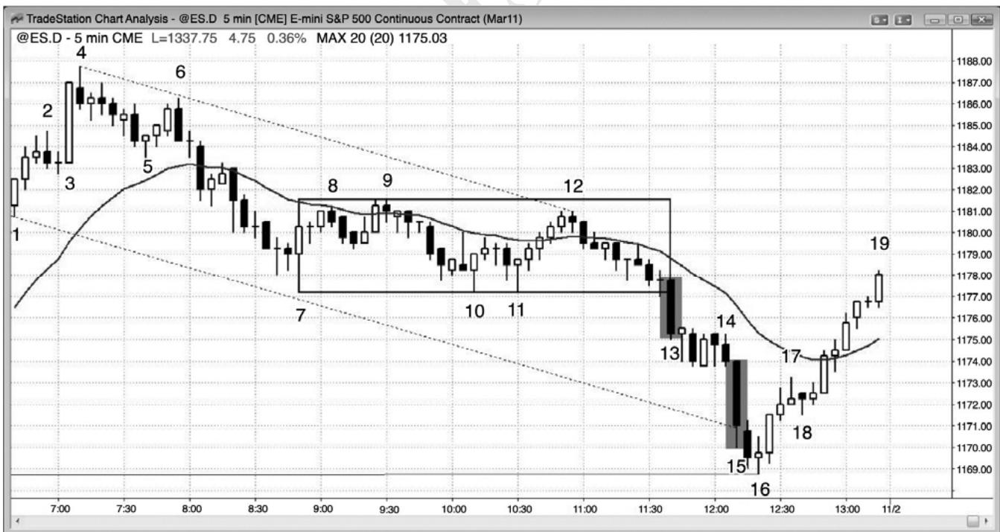
P79
如果一轮趋势突破加速，那么它可能是一次成功的突破，引出另一条下跌腿，也可能是趋势的耗尽型终点。图 4.1 中，在这张 5 分钟电子迷你图表上，棒 13 和棒 15 的振幅和实体都非常大，而且跟在另外几条空头棒之后，但是却预示着相反的情况。在一个可能的趋势恢复空头趋势日中，棒 13 向下突破一段交易区间。它成为一个测量缺口。强突破通常至少包含两条腿，比如此处。第二波卖出高潮之后的反转可能是一棒或几棒，那些棒线的低点可能低于卖出高潮的低点，比如这里截止棒 14 的空头旗形中，棒 15 是一条更大的空头趋势棒，所以代表着更为强烈的卖出，市场几乎变得垂直。最后一批多头已经卖出，没有人再卖出。当市场在它的高点上方反转时，它成为一个耗尽型缺口。连续的卖出高潮往往引出至少 10 棒、两条腿的反转。（我常常使用“_10 棒、两条腿”，我的意思是说调整将会持续较长时间，比小型回撤要复杂。那种类型的调整通常至少需要10棒和两条腿。）强多头反转回到交易区间，像所有交易区间一样，该交易区间也是一个磁力位。
在延长的趋势之后，所有强势多头和空头都喜欢看到异常大型的趋势棒（比如棒 15），因为他们预期它是一个短暂的、超级棒的机会。趋势棒是一个突破，由于大部分突破尝试失败，而且这一个出现在一波没有多少调整的卖出高潮之后，同时是在没有调整的情况下已经持续了几十棒的一轮多头趋势之后，所以不会出现崩盘的几率非常高。当下跌几率非常小（至少在若干棒内）时，聪明的交易者们把这看作一个不同寻常的买进机会。空头买回他们的空头头寸，多头则买进新的多头头寸。双方在那一棒的收盘价、在它的低点下方、在下一棒收盘价（特别是当下一棒是一条不太强的趋势棒，或者拥有反向实体时）、以及在接下来一棒的收盘价积极买进。那一棒是棒 16，它拥有一个多头收盘。他们也会在前一棒的高点上方买进。当他们看到一条强多头趋势棒时，比如棒 16 后一棒，那么就在它的收盘价及其高点上方买进。多空双方都预期出现较大调整，直到一波包含至少 10 棒和两条腿的调整完成后，空头才会考虑再次做空，即便那时，也仅在反弹看起来疲弱时买进。多头预期出现相同的反弹，不会急于过早地获利了结。在棒 15 收盘价买进的、经验丰富的激进型多头，可能会使用与那一棒高度相等的止损，即 4 点的止损。在他们止损被击中前，市场或许至少有 60%的几率至少测试那一棒的高点，所以这是一笔数学基础很棒的交易。一旦市场开始向上快速反转，他们就会至少把部分头寸波段化，等待收盘。
弱势交易者们对棒 15 的看法刚好相反。刚刚在一旁等待、希望在回撤时做空的弱势空头，看到市场快速离他们远去，希望确保抓住下一条下跌腿，特别地由于棒 15 是这样强的一棒。他们把那条大型空头趋势棒看作可能的崩盘。他们知道概率非常低，但是不希望冒险错过巨大的回报，他们认为那些回报足以弥补非常低的胜率。早先买进的弱势多头可能已经逐步加仓，他们害怕棒 15 的快速下跌，担心会形成持续的坚持到底卖出，于是他们抛出自己的多头头寸。这些弱势交易者是依靠情绪交易的，正在与（机构的）电脑相抗衡，而电脑的算法中没有情绪这一变量。由于是计算机控制市场，所以弱势交易者们的情绪注定让他们在棒15这样的棒线上大亏。
棒 11 是一个二次入场买进信号，预期形成一个更低低点重要趋势反转。截止棒 9 的两条腿反弹向上突破了从棒 6 到棒 7 的下跌运动的空头趋势线。不过，只有一棒收盘于均线上方，所以没有引人注目的买进。截止棒 12 的五棒多头尖峰可能是一个重要多头趋势反转的起点，但是它没有一条大型多头趋势棒，只是测试交易区间的顶部棒 9，在那里与棒 9 形成一个双重顶。此时，市场要么正在经历一次疲弱的重要趋势向上反转，要么测试空头市场中一段交易区间的顶部（一个空头旗形）。大型棒 13 空头趋势棒是对该空头旗形的突破，也是空头趋势的恢复。重要趋势反转尝试失败。趋势线突破和离开棒 11 低点的反弹都缺乏连续的大型多头趋势棒，交易者们一直没有认为市场已经翻转进入总在场内多头状态。
P80
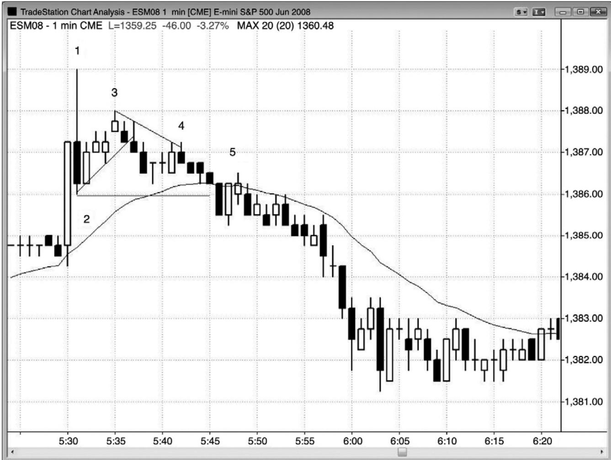
有时，市场会形成一个上涨尖峰，然后再形成一个下跌尖峰然后，当多头和空头争着形成一条通道时，通常会进入交易区间。多头试图制造一条上升通道，而空头希望制造一条下降通道。
如图 4.2 所示，在太平洋标准时间上午 5:30，全球期货交易系统（Globex）1 分钟电子迷你形成一个上涨尖峰，但是在棒 1 向下形成一条强反转棒。棒 1 是一条三点高的棒线，在1 分钟图上是比较大的，因此符合下跌尖峰的标准。棒 3 是一波两条腿上涨运动，在可能的新空头趋势中形成一个低点 2。另外，棒 2 是一个 ii 形态的变种，如果你只看实体的话（棒2 的实体位于棒 1 的实体之内，而棒 1 实体位于前一多头突破棒内部，ii 形态表明犹豫不决），截止棒 3 的上涨运动是对该 ii 形态顶部的一次虚假突破。市场横盘大约 10 棒，是下跌尖峰后一段合格的交易区间。棒 4 向上小幅突破一条微型趋势线，然后市场恢复其下跌趋势。棒5 是二次入场机会。它是市场向下突破棒 2 后的回撤，是一个失败的微型通道突破。
作为一条一般性规则，大幅上涨+大幅下跌＝混沌＝交易区间，至少短期如此，比如棒 1空头反转棒和买进高潮之后的情形。
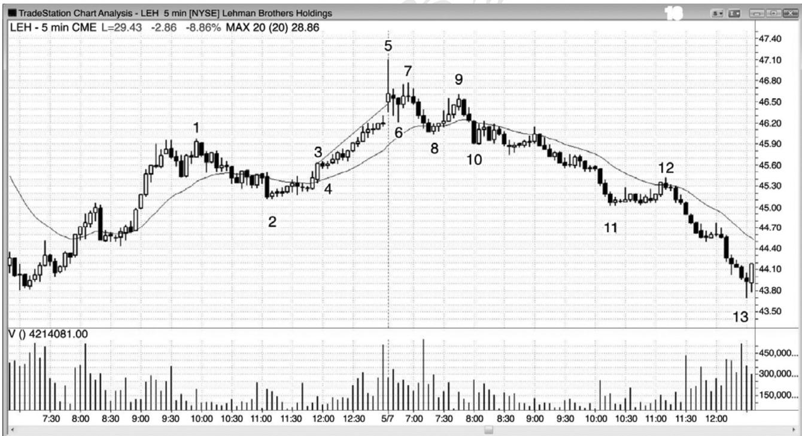
P81
带有一条很长上尾线的大型棒是一个上涨尖峰加一个下跌尖峰，不过两个尖峰是在一棒之中。
有时，通道可能非常紧凑，比如图 4.3 中棒 3 尖峰之后的那条通道。在一条非常紧凑的通道内，棒线超过了 10 棒，这是不能持久的行为。几乎每一棒都有一个更高高点、低点和收盘价。然而，处于非持续状态并不足以作为做空的理由，因为市场的这种异常行为的持续时间，可能比你的账户的持续时间要长。每当市场做某种极端的事情时，随后不久会出现相反类型的行为。一轮极端趋势之后将是一段交易区间，有时是反转，而一段极端交易区间之后是一轮趋势。
紧凑通道实际上是一条向上倾斜的紧凑交易区间，最后它必须被突破。在棒 5，它被向上突破，当突破失败后，市场很可能向下突破，结果如此。市场横盘运动 5 棒，然后在棒 7形成一个更低高点，在棒 5 下跌尖峰（在 1 分钟图上肯定是一个上涨尖峰加一个下跌尖峰）之后完成一段小型交易区间。在较高时间框架图表上，截止棒 2 的抛盘向下突破了多头趋势线，截止棒5的反弹是一个更高高点重要趋势反转。
可以把棒 9 看作交易区间的扩张，棒 8 向下突破多头趋势线的一个更低高点重要趋势反转，或者一个双重顶空头旗形（它与棒 7 大致处于相同价位，至少是第二次尝试向棒 5 高点反弹）。叫什么名称都没有什么关系，但它是一个很好的做空架构。然后，市场在当天剩余时间内趋势下跌，而且是加速下跌。
棒 10 是一个三棒空头尖峰，截止棒 11 的下跌运动是一条通道。昨天，棒 3 是一个尖峰，之后是一条开始于棒 4 的通道。通道起点通常会在一两天内被测试（棒 4 低点被开始于棒 5长尾线的高潮顶之后的空头趋势所取代，但是下跌通道的起点棒10高点在接下来的两周内都未被测试）。
截止棒12的运动刚刚向上突破空头趋势线，它是一波疲弱的运动。因此，交易者们应该继续只寻找做空架构，而不是趋势反转。仅仅突破趋势线并不足以作为寻找反转的理由。突破必须很强，然后交易者们才会相信多头能够持续制造一波很强的上涨运动。
图 4.4 高潮之后，短期内通道方向可能不明确
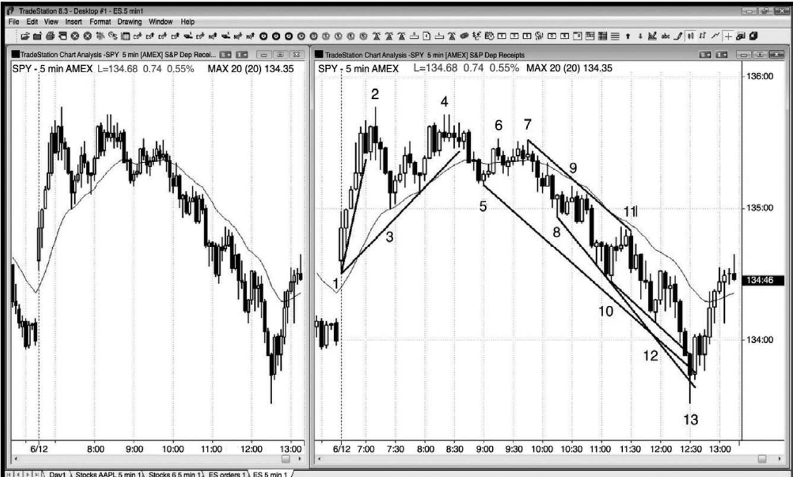
P82
在一波买进高潮（一个上涨尖峰，然后一个下跌尖峰，有时是在一棒之内）之后，常常会形成一条失败的多头通道，然后市场会形成一条空头通道。图 4.4 中的两张图表都是 5 分钟 SPY。截止棒 2 的上涨运动是一个很强的多头尖峰。截止棒 3 的快速回撤逐渐靠近均线，它突破了一条趋势线，然后，多头通道开始。不过，它在棒 4 处一个两条腿更低高点中失败。一旦市场以棒 5 回撤向下突破该多头通道，它也突破了重要多头趋势线，显然这不是一个多头尖峰和通道日，而且市场显然正在形成一段交易区间。这成为一个三重顶，然后是向下的尖峰和通道。有些交易者把截止棒 3 的下跌看作重要的空头尖峰，而有些交易者则把截止棒5 的下跌运动看得更为重要。两个尖峰都是卖压的一部分，结果使得空头获得对市场的控制权。
棒 8 与棒 3 形成一个双重底多头旗形，它是均线缺口棒的第二个做多入场。一旦买进失败，显然是空头在控制市场，一条空头通道正在行进中，截止棒 5 的下推是空头尖峰。此时，你应该尽可能选择所有做空入场，把任何做多交易都视作刮头皮，直到出现对空头趋势通道线的高潮过冲和向上反转。总之，当出现类似这样强的空头趋势时，最好忽略掉做多架构，只做顺势交易。棒13在突破三条这样的线后向上反转。
连续高潮常常导致明显的调整，但是如果每一波高潮之后都有明显的调整，那么连续高潮之后出现明显调整的几率降低。截止棒 3 有一个卖出高潮，截止棒 5 是另一个卖出高潮，但是截止棒 4 和棒 7 的反弹释放了卖压，减少了快速向上反转的需要。不过，在从棒 7 到棒18 的空头通道内，没有释放从棒 9 到棒 10 和从棒 11 到棒 12 的高潮期间所产生的强烈卖压。截止棒13的四棒暴跌是耗尽型卖出高潮，表明弱势交易者已经投降。第三波卖出高潮通道是最有激情的，它一般拥有一个大型空头尖峰，它在趋势通道线处过冲，形成一个向通道的抛物线形弯曲。抛物线形斜率表明下行动能正随着市场下跌而增加，抛物线趋势通常是趋势的最后一个阶段。最后的弱势多头放弃，在任意价位卖出，最后的弱势空头最终加入到其他空头之列，自由下落期间在市价做空。这是没有明显突破的第三波连续卖出高潮，通常常常在第三推结束。紧凑通道意味着存在紧迫感，而且在下跌过程中动能不断增加。截止棒13的运动快速跌穿趋势通道线，很多通道都是这样结束的。
那么强势多头和空头是怎么操作的呢？他们看到高潮行为，理解什么是市场过度。强势空头已经在较高价位做空，对于在这里做空并无兴趣。他们只会在明显的回撤做空，可能是在靠近他们最初做空的通道顶部。不再有强势或弱势空头做空，也不再有弱势多头离场，卖压消失了。强势多头看到崩盘，在一旁观望。他们知道市场正在下跌，所以对于他们来说，没有买进动机，直到他们认为市场已经接近底部。他们希望在最佳价位买进，那就是在底部。对于价值和过度，不同机构有着自己不同的标准，当足够多的机构认为市场存在很好的价值时，便会产生足够强的卖压，令市场反弹。同样地，强势空头也明白过度，他们获利了结。他们的买进助长了反弹。如果市场能够返回通道起点附近，那么他们还会考虑做空，他们先
P83
底部总是位于很多磁力位汇集区。这里，它略微超出一波以棒 1 开盘价到多头尖峰最后一棒收盘价为基准的下跌测量运动的目标。它也是一个趋势通道线过冲，刺穿了经过昨日两个波段低点的一条趋势通道线（未画出），而且棒 13 双棒向上反转也是一个大型的两日扩张三角形底部的信号。棒 13 还过冲了从棒 7 开始的下跌通道的三条较小的趋势通道线。
图 4.5 反向趋势棒产生高潮反转
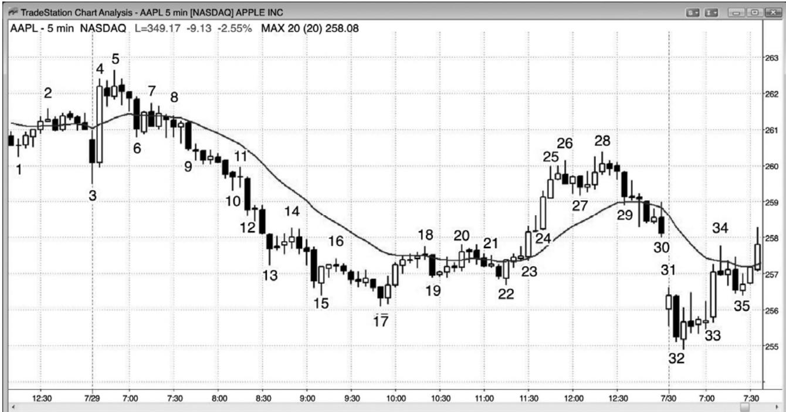
一个方向的一条趋势棒，紧跟着相反方向的另一条趋势棒，是一种高潮反转，接下来的通道可能向任一方向，因为出现了两个方向的尖峰。在图4.5中，AAPL在5分钟图上形成几波高潮和反转。
棒 3 是一条大型空头趋势棒，所以是一个尖峰、一个突破和一波高潮。紧接着形成一条更大的反向趋势棒，那是一个买进高潮。人们很容易认为这代表着更强的信念，但是，你需要耐心，让市场展示出它正在向哪里运动。你的工作是跟随机构，而不是猜测他们可能做什么。
截止棒 5 的反弹是一个更高高点突破回撤，形成于棒 3 空头突破之后，是棒 4 多头突破后的一次暂停。棒 6 是另一个空头尖峰，因此是另一个卖出高潮。棒 6 后面的紧凑交易区间是棒 4 多头突破之后的一波回撤，可能是棒 3 突破和棒 6 空头尖峰之后的空头通道的起点。在棒 6 后面的紧凑交易区间内，多头正在买进，试图制造一条多头通道，空头正在做空，试图制造一条空头通道。空头最终获胜。即便棒 4 买进高潮是一条比棒 3 和棒 6 空头尖峰更大、更强的趋势棒，空头也未能战胜多头。
棒 15 是一条多头反转棒，由于它拥有相当大的波幅和实体，所以它是一波买进高潮。它紧跟在一条大型空头棒后面，那是一波卖出高潮。由于下降通道非常陡峭，所以第一次突破尝试更有可能失败。在强趋势的反转中，每当出现一条小型入场棒时，几率偏向于它只是成为一个顺势旗形。这里，棒15反转后面的两棒很小，表明多头势弱，它们形成一个空头旗形。
所以双棒反转都是方向相反的高潮，尽管通常比较小。棒17是一波小型空头高潮，紧接着形成一条多头趋势棒，构成一个双棒反转。下跌尖峰是卖出高潮，上涨尖峰是多头突破。那个上涨尖峰持续了三棒。棒19是一个空头尖峰，它是一波卖出高潮，也是对空头旗形的突破，那个空头旗形也是向均线的回撤。它被棒10（译注：据图应为棒20）买进高潮所反转。
从棒23到棒25，或者只包含棒24和25的多头尖峰，被棒29较小的空头趋势棒所反转。那波卖出高潮之后跟着两个十字星，然后下跌进入收盘。那条空头通道在次日结束。
棒 31 是一波买进高潮，紧接着棒 32 一波卖出高潮，它在下一棒被反转。棒 33 是另一条大型多头趋势棒，因此是一波买进高潮，它向上突破了开盘区间。之后是一波四棒回撤，包含一条空头突破棒，然后以多头通道的形式恢复上涨。
截止棒 18 的反弹向上突破了从棒 5 到棒 17 的空头通道，但是在均线处停止。市场从棒20 处的双重顶向下反转，但是在棒 22 低点遇到买家，市场在那里形成一个双重底多头旗形。那个双重底更高低点是一个重要趋势反转的很好架构吗？它并不理想，原因是尽管空头趋势线上方截止棒 20 的两条腿反弹拥有很多多头棒，但是却未能一直保持在均线上方，所以并不是强势反弹。从棒 22 双重底到棒 28 的两条腿反弹，强得令人吃惊，但是很多交易者把它看作空头趋势中的第一波反弹，所以可能只是一波空头反弹，而不是一轮新的多头趋势。不过，它的强度足以令交易者们准备在测试空头低点时买进。交易者们在次日开盘棒 32 下跌之后的那条多头棒上方买进，然后又在一棒之后形成的第二条多头信号棒上方买进。它形成一个二次信号（弓棒 32 后面的多头棒形成一个微型双重底），因此更加可靠。结果是在强空头趋势线突破（截止棒 28 的反弹）之后从更低低点处形成一个重要趋势反转。因为该形态延续了如此多棒，所以可能在较高时间框架图表上看起来较为简单。
P84
图 4.6 V 形顶和 V 形底比较罕见
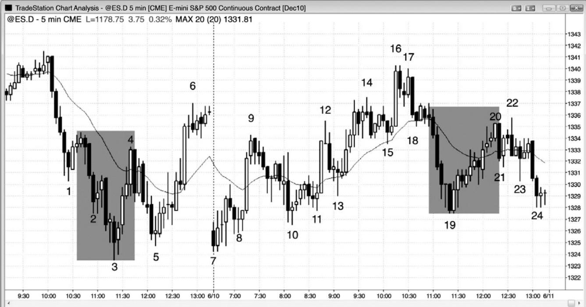
在首先没有明显回撤的情况下令市场反转的 V 形底和倒 V 形顶较为罕见。大部分尖峰都不会立即令市场反转，相反地，尖峰的终点通常会被测试。在图 4.6 中，棒 3 楔形底引起一波向均线的反弹。这是一个潜在的 V 形底，但是截止棒 5 更高低点的抛盘测试了该尖峰的底部。实际上，大部分被称为倒 V 形顶或 V 形底的反转是某种其他类型的（顶部或）底部，比如最终旗形反转或微型双重顶或双重底。举例说明，从棒 3 低点的向上反转是一个楔形底，一个最终旗形反转，根据是棒 2 后面有一个双棒空头尖峰。棒 19 处的底部是一个微型双重底，因为棒 19 前一棒是首先下跌，然后上涨进入其收盘。棒 19 再次下跌，它的后一棒再次上涨，构成一个微型双重底。这个双重底在 1 分钟图上很容易看出来（未给出），根据这张 5 分钟图也很容易推导出来。
棒 20 是棒 19 空头尖峰和一个 V 形底尝试之后的一波延长的反弹的顶部，但是棒 19 尖峰低点在当日收盘得到测试。
截止棒 4 的上涨向上强势突破空头趋势线，那使得多头准备在市场对棒 3 低点形成更低低点或更高低点测试时买进。多头希望看到市场向上强势突破趋势线，而不只是以横盘之势缓慢地超越趋势线。
交易者们预期截止棒 3 的三波连续卖出高潮之后将出现一次大的调整，至少形成横盘至上涨的两条腿，至少持续10棒。在整波运动中，最后一波高潮通常拥有最大的空头趋势棒，棒 3 前倒数第二棒便是这样一棒。强势空头仅准备在明显回撤后做空，而强势多头积极买进，如果市场继续走低，那么会买进更多。在从当日高点开始的紧凑通道内，第三波卖出高潮之后，没有哪一群强势交易者愿意在棒 3 低点卖出。强势空头正在买回他们的空头头寸，强势多头则正在积极买进新的多头头寸。
截止棒 6 的两条腿反弹向上大幅突破多头趋势线，提醒交易者们下一次下推可能会测试棒 3 空头低点，然后向上反转。棒 7 是一个双重底重要趋势反转。有些交易者把第一个底部看作棒 3 低点，而有些交易者与棒 5 低点一起把该形态看作一个双重底多头旗形。
由于大部分反转尝试（包括高潮反转）失败，所以很多交易者在反转处逆势操作，预期趋势恢复，至少足以做一笔交易。举例说明，虽然截止棒 4 的反弹非常强劲，但是很多空头只是把它看作一波向均线的回撤，与从棒 1 开始的回撤形成一个双重顶。他们认为那是一个高位做空的短暂而很棒的机会，他们在棒 5 获利了结，这一点从棒 5 的下尾线和较小的多头实体便可看出。
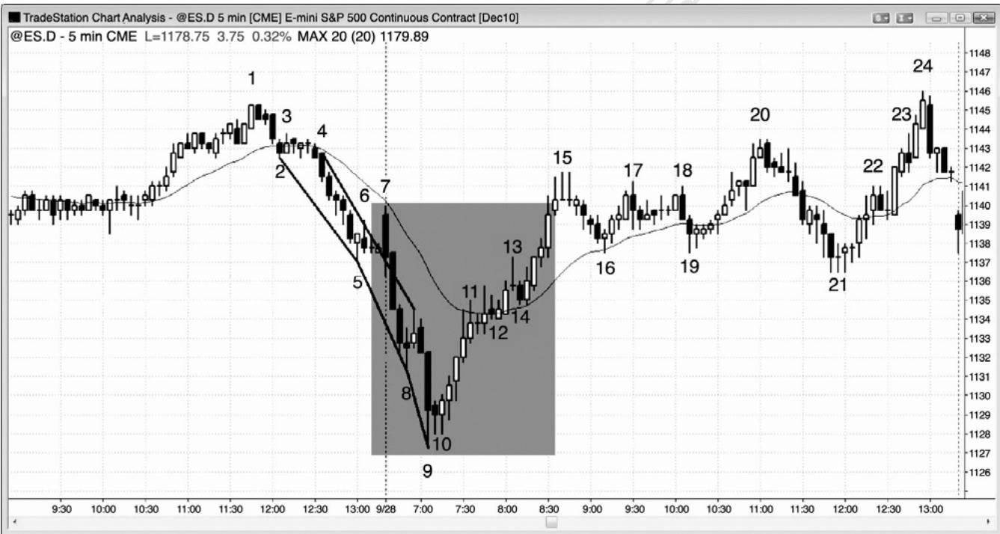
P85
在 5 分钟图上，没有明显测试尖峰的 V 形底或倒 V 形顶一月只出现几次。图 4.7 所示为一个 5 分钟 V 形底，它是一波卖出高潮和一个高潮反转。开盘截止棒 9 的抛盘是一波抛物线运动，是一种卖出高潮。你可以看到三条趋势通道线的斜率变得越来越大（从棒 2 到棒 3，从棒 5 到棒 8，从棒 8 到棒 9），那就表明存在恐慌。交易者们希望在任意价位卖出。空头推动他们的空头头寸，当市场在强空头尖峰中下跌时快速加仓。然而，当出现连续卖出高潮时，在没有明显回撤的情况下迫切做空、甚至情愿做空的交易者，很快就被市场全部满足。这种卖出的缺乏产生一种买进失衡，接下来通常会形成一波反弹，至少持续 10 棒，至少包含两条腿。
每当出现一波卖出高潮，或一对连续卖出高潮（比如在这里，结束于棒 8 和棒 9 的空头尖峰），而且卖压在市场已经下跌十几棒后增加时，很可能形成强势反转。强势多头在一旁观望，因为他们预期市场将跌至某个磁力位汇集区；一旦市场到达那里，他们就突破冒出来积极买进。强势空头明白正在发生什么，一旦他们看到超大卖出高潮棒棒 9，他们就迅速将自己的空头头寸获利了结，而且在市场大幅上涨前不准备再次做空。强势多头和空头都在棒 9收盘价和随后的双棒微型双重底买进，市场只会上涨。
当市场中出现一个很强的尖峰，看起来跌幅太大、跌速太快时，它有可能是一波由卖出真空引起的下跌，将会测试某个支撑位，很多交易者将会关注高潮反转的征兆。截止棒 8 形成一个很强的空头下跌尖峰，然后是一个单棒低点 1 卖出信号。经验丰富的多头和空头意识到，如果一两棒之内出现超大空头趋势棒，那么它可能是卖出的耗尽型终点。那条低点 1 信号棒可能是一个单棒最终旗形（在第 7 章讨论）。当棒 9 收盘，而且成为一条特别大的空头趋势棒时，它成为一波连续的卖出高潮，可能引起一个最终旗形反转和反弹，可能持续10棒或更多棒，拥有两条腿或更多条腿。在这种情况下，很多空头买回他们的空头头寸，因为他们注意到市场可能会迅速反弹。如果大约 10 棒之后出现一个合理的卖出信号，那么他们会准备再次做空。在这种情况下，市场强势反弹，空头看不到它会下跌的征兆，于是他们一直没有看到一个合理的做空架构。
激进型多头也认为市场很可能反弹，于是他们也买进。有些多头和空头在棒 9 收盘买进，所承担的风险约为棒 9 高度；有些人选择承担较低的风险，比如一两点。有些多头和空头在下一棒期间及其收盘买进，由于它是一条小型棒，所以表明卖压正在减退。有些人会等到棒10 出现一个很强的多头收盘，然后在它的收盘或其高点上方买进。最后，剩余空头买回他们的空头头寸，希望确信市场已经翻转为总在场内多头的谨慎型多头，在离开低点的五棒多头尖峰和随后的反弹中买进。在从棒 10 低点开始的快速而强烈的多头上涨尖峰内，很多多头推动他们的多头头寸，不断加仓。
当市场快速运动时，经验丰富的交易者们的头寸的利润正在快速增长，在这种短暂的超常机构中，当他们试图将自己的利润最大化时，他们常常会买进更多。这与他们在市场处于紧凑交易区间中时的做法相反，比如图表左侧头20棒期间。当出现小幅运动时，大部分交易者会闪在一边，在趋势开始前并不急于交易。然而，机构和高频交易区间公司在一天中继续重仓交易，包括在紧凑的交易区间内。
完美的 V 形底——市场垂直下跌，然后上涨——极为罕见。大部分 V 形底都有微妙的价格行为显示出卖出的犹豫，比如在这里，提醒交易者们可能反转。棒 8 后一棒是一个单棒最终旗形，提醒交易者们市场可能在一两棒卖出高潮后向上反转。棒10与它的前一棒形成一个微型双重底，与它的前一棒和棒 9 低点形成一个微型三重底。这是一个微型三推下跌形态，在较小时间框架上可能是一个三角形，在连续卖出高潮和单棒最终旗形之后，它带给多头一个低风险、高胜率入场。
P86
昨天，当市场相对平静时，大部分棒线每棒的成交量约为 5,000 到 10,000 张合约。棒 9拥有 114,000 张合约。这种数额的成交量几乎完全与机构相关。它是由机构做空（在市场已经下跌了很多棒之后，他们最终认为市场正在下跌）产生的，还是由多头和空头的积极买进（他们把这个连续的卖出高潮看作当时卖出的终了）产生的呢？机构都是聪明钱，因此，每当他们突然都达成一致意见，在一轮延长的空头趋势中重仓操作时，很可能是由于空头（获利了结）和多头和积极买进产生的。如果机构是聪明的、稳定获利的，而且制造了每一个跳动，那么他们为什么还会在空头趋势的最低点卖出呢？那是因为他们的算法已经在整个下跌过程中做出了获利的操作，有些算法被设计来继续交易，直到空头趋势已经明显地不起作用。他们最后的做空引起了亏损，但是他们之前交易中所赚到的足以弥补那些损失。记住，他们的所有系统都会在30%到70%的时间里亏损，这便是那些时间中的一个。也有高频交易（HFT）公司会为了空头趋势底部 1 个跳动的利润而做刮头皮交易。那个低点总是位于一个支撑位，许多 HFT 公司将在该支撑位之上一两个跳动处做空，设法捕捉最后 1 个跳动的利润，前提是他们的系统表明这是一种可获利的策略。其他机构会在另一市场（股票、期权、债券、货币等等）卖出以部分套利，因为他们认识到通过套利，自己的风险/回报比会更高一些。成交量不是来自私人交易者，因为在大型拐点处，他们的成交量所占比例不足5%。
图4.8 尖峰回撤比尖峰反转常见
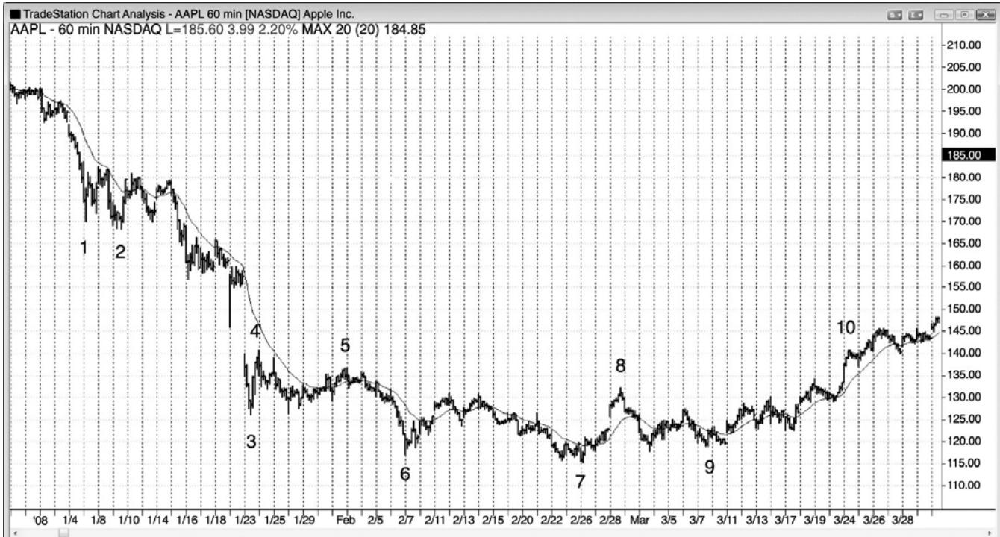
尖峰是对顺势交易者和逆势交易者力量的测试。多头市场中的上涨尖峰和空头市场中的下跌尖峰通常会被测试，因为尖峰反转比简单的临时趋势极点（通常会被测试和超越）少见得多。多头市场中的下跌尖峰和空头市场中的上涨尖峰都是回撤，可能会被测试，也可能不会被测试。它们已经测试，测试的是逆势交易者们和顺势交易者们的决心。回撤常常接近于令总在场内头寸向反方向翻转，但是却没有足够的坚持到底。强势交易者们喜欢这些反转尝试，因为他们知道大部分反转尝试都将失败。每当逆势交易者们能够做出反转尝试时，顺势交易者们就会介入，强烈抗争那种反转尝试，而且通常会获胜。他们把这些迅猛的逆势运动看作在很棒的价位顺势入场的大好机会，那种机会很可能只会短时存在，很快变成趋势中的一个尖峰回撤。图 4.8 中，在这张 60 分钟 AAPL 图表上，空头市场中的棒 1、棒 3 和棒 6 空头尖峰，以及棒 4 和棒 8 多头尖峰都得到了测试。
棒4是空头趋势中的一个多头尖峰，不必被测试，但是在大约10棒之后，它被测试。
棒 8 是交易区间中的一个多头尖峰，突破了一条重要趋势线，所以它很有可能被测试。
棒 7 是一个新的波段低点，但不是一个尖峰，所以它不必被测试。
图 4.9 尖峰回撤通常不会被测试
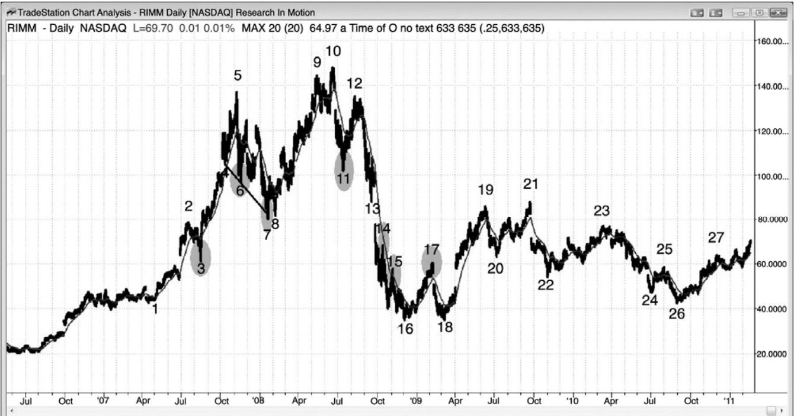
P87
尖峰回撤不必得到测试，因为交易者们一致认为趋势正在恢复，他们急于赶上趋势，但是尖峰反转通常会被测试，因为它是逆势运动，交易者们不大愿意认为反转将会成功。
在多头趋势中，大部分空头尖峰都是由获利了结的多头（他们打算在低位再次买进）和激进型空头（他们只寻找空头刮头皮）引起的。当市场迅速下跌时，比如在棒 3，多头积极买进，新建多头头寸或者将多头头寸加仓，空头买回他们获利的刮头皮头寸。一旦空头能够获得坚持到底卖出，比如他们在截止棒 7 的下跌运动中所做的，他们就预期市场的双向性正变得足以向交易区间、甚至是重要趋势反转转变。他们不是在下一波反弹做空头刮头皮，而是开始持有部分或全部头寸，预期形成下跌波段。多头还预期出现更深的下跌，只会在大幅下跌后买进，而且仅当出现清晰的买进信号时买进。由于在市场跌幅超过先前回撤之前双方都不愿买进，所以出现更深回撤、交易区间、甚至重要趋势反转的几率增加。
图 4.9 中，棒 3 是一轮强多头趋势中的一个空头尖峰，很可能不会被测试。它只是第一均线缺口棒，将空头套住。虽然卖压很强，但是没有足够的坚持到底卖出以说服交易者们市场快到反转进入总在场内空头方向。在尖峰期间做空的空头认识到这一点，快速买回他们的空头头寸，闪在一旁，等待下一个市场反转机会。多头积极买进，因为他们认识到空头已经失败，这次下探只是一个在很棒的价位买进的短暂机会。他们期望出现空头尖峰，因为他们知道大部分反转尝试失败，因此成为很棒的买进架构。由于没有人再愿意卖出，所以市场快速上涨很多棒。
棒 6 是紧跟在一个楔形顶之后的一个空头尖峰，使得它很可能被测试，因为预期至少形成两条下跌腿。
棒 7 是一条空头腿中的一个空头尖峰，它得到一个更高低点测试，引起更高时间框架多头趋势的恢复，依据棒4、6和7的楔形多头旗形。
棒 11 是一个强下跌尖峰，可能是新空头趋势中的第一条下跌腿，因为它跟在棒 10 更高高点后面。此时，它很可能不是多头趋势中的一波回撤，所以很可能被测试。市场很可能在强多头趋势线突破（截止棒 7 的下跌）后至少形成两条下跌腿，然后创出一个更高高点。
棒 13 是一轮大型多头趋势中一波两条腿回撤的底部。这可能引出一个新的多头高点，因为它位于棒 7 低点上方，而且市场仍然在创出更高低点和高点，可能仍然处于多头趋势中。面对如此强劲的下行动能，最好等待从此价位开始的反弹，形成一个更高低点，然后再准备做多。市场以一个大型缺口向下突破。
棒 14 和 15 是强空头趋势中的多头尖峰，不必被测试。
棒17是空头趋势中的一个多头尖峰，所以不必被测试，它可能只是空头趋势中的又一个更低高点，空头趋势包含一系列更低高点和低点。然后，它跟在一个小型楔形底（棒15是第一次下推之后的回撤）之后，该楔形底很可能至少引出两条上涨腿，所以截止棒 17 的运动是两条可能的腿形中的第一条。另外，棒16低点位于棒1紧凑交易区间区域，那是一个支撑区，所以可以合理地预期交易区间可能在那里形成。这就意味着很可能从棒 18 双重底开始形成第二波反弹。截止棒 17 的反弹突破了空头趋势线（从棒 12 到棒 16 的下跌趋势），使得交易者们猜测接下来是否会是对空头低点的测试，然后要么进入交易区间，要么形成一个重要趋势反转。结果它成为一段大型交易区间的起点，该交易区间一直持续到图表的终点。
P88
图4.10 多头尖峰的测试
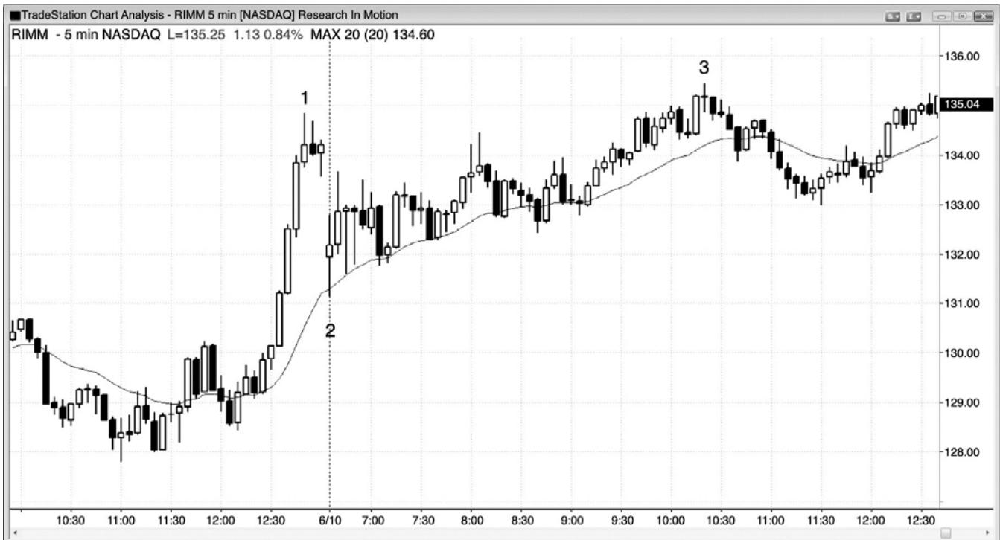
如图 4.10 所示，动态研究公司（RIMM）昨天以一个强多头尖峰收盘，所以今天极有可能超越它。虽然今天的反弹比较拖沓，而且不怎么看涨，但是空头仍然不能使连续两棒收盘于均线之下。这张图表正在上涨，但是它的力量正在减退。
图 4.11 倒 V 形顶
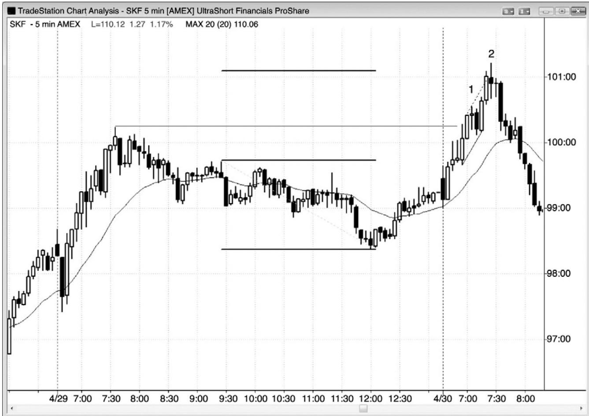
如图 4.11 所示，ProShares UltraShort Financials ETF（SKF）中这个棒 2 高潮开盘反转（倒V形顶），只是突破一条小型空头（译注：据图应为多头）趋势通道线（虚线）的顶部之后的一个反转。它也是向上突破昨日高点之后的一个二次入场，也是开始于昨日开盘的腿1＝腿 2 趋势恢复的终点。它是自没有明显回撤的开盘起的第三波连续的买进高潮，是一个可能的单棒最终旗形反转（棒1后面的空头棒是单棒高点1多头旗形）。在较高时间框架图表上，昨天的抛盘向下跌破多头趋势线，棒 2 是从一个更高高点开始的向下反转。它是一波从昨日交易区间开始的向上的测量运动，但是这并不足以作为在多头趋势做空的理由。当一轮强趋势到达一个测量运动区域时，多头在获利了结，但是空头只会在存在其他因素的情况下做空，比如在此处。
P89
棒 2 与它前面的多头趋势棒形成一个微型双重顶。市场在那条多头趋势棒上涨，然后在棒 2 顶部的尾线再次上涨。市场跌至棒 2 底部，第三次上推至后面的小十字星棒的高点，构成一个微型头肩顶或三角形，在较小时间框架图表上较容易看出。这个顶部也是一个单棒最终旗形反转，从棒 1 后面的单棒最终旗形开始。棒 2 和它后面的十字星的实体，以及棒 2 前
面的多头棒的实体，构成一个ii形态。
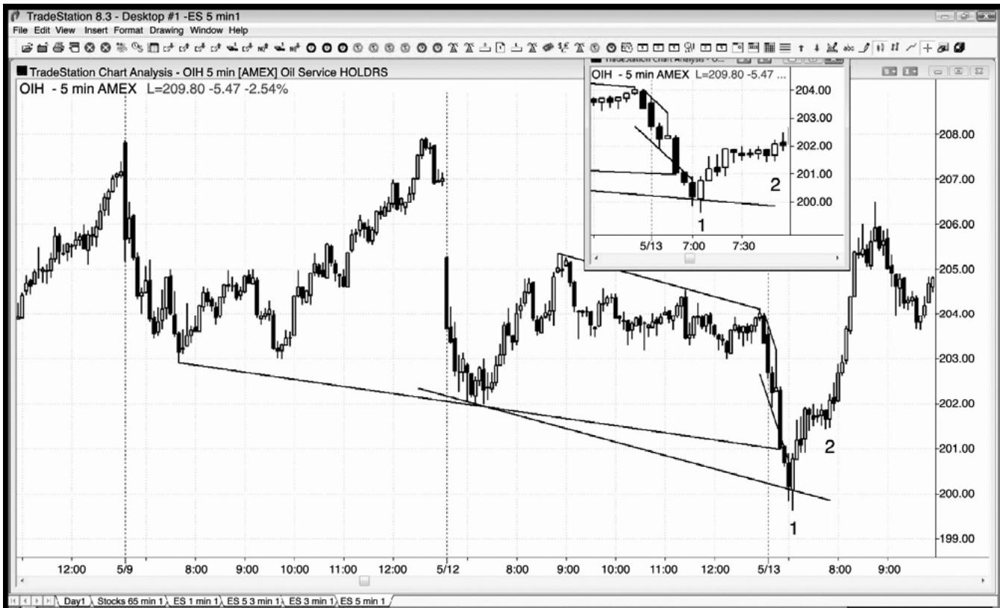
当涉及其他因素时，高潮反转更为可靠。如图 4.12 所示，5 分钟 Oil Service HOLDRS（OIH）形成一个高潮开盘反转，跌破了昨日低点，它也是一个三趋势通道线过冲反转。交易者应该在棒 1 处的大型双棒反转上方买进，在棒 2 处的高点 2 首次回撤再次买进，预期至少形成两条上涨腿。当很可能形成两条腿时，一定要把部分头寸波段化，因为有时将形成一轮新的趋势，而不只是两条腿回撤。
棒 1 是一个双棒反转底。棒 1 前一棒是一条大型空头趋势棒，大于它前面的空头棒，而且收盘远低于那一棒。这就意味着它是对那一棒的向下突破，而那条较小的空头趋势棒则是一个单棒最终旗形的变种。在较小时间框架图表上，它可能是一个小型最终旗形。
图4.13 不要在市场测试空头趋势通道线时买进
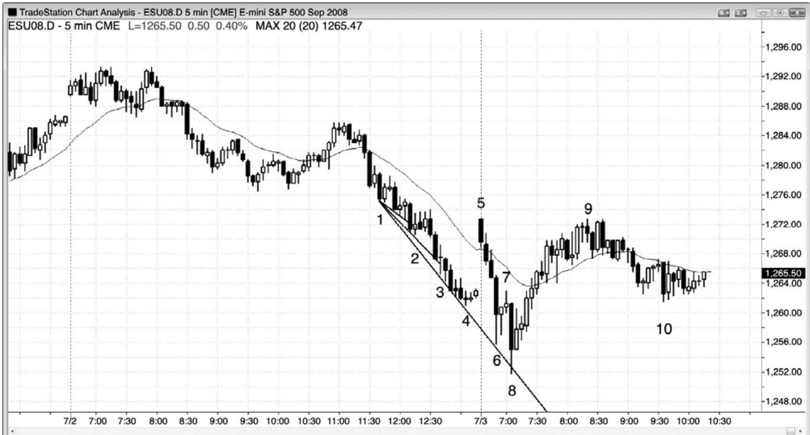
P90
逆势交易者们总是在绘制趋势通道线，希望出现过冲和反转，至少允许他们做一笔刮头皮交易，而最好是形成两条腿的逆势运动。当通道陡峭时，在趋势通道线过冲处的每个反转买进是一种失败的策略。相反地，应该等待，直到出现对通道的强突破，比如图4.13中截止棒 5 的大型上涨缺口，然后准备在突破回撤买进，比如棒 8 二次尝试反转昨日低点。
棒 2 突破一条小型趋势通道线，但是之前没有出现逆势力量，而且架构棒只有很小的多头实体。聪明的交易者们会等待二次入场，特别是一个更高低点，如果的确形成一个更高低点，那么他们会把它看作一个顺势架构，果然如此。注意，对棒 2 的向下突破表现为一条强空头趋势棒。这是因为有很多多头在这个小楔形的早期入场，很多人不愿承认反转已经失败，直到出现一波跌破楔形低点棒 2 的运动。那是他们的保护性止损所在价位。另外，很多空头也把入场止损设在那里，因为失败的楔形通常最低会引出一波约等于楔形高度的运动，形成一个很棒的做空入场，预期形成一波向下的测量运动。当空头通道像这样陡峭时，聪明的空头将设定限价单在前一棒高点或其上方做空，刚好是在过于急切的多头买进的位置。
棒3过冲了另一条趋势通道线，但是没有出现入场信号，所以被套的多头非常少。
棒 5 在远高于空头通道处开盘，但它是一个 20 缺口棒做空架构，本质上是一条第一均线缺口棒（足够接近——它的实体很大，而且完全位于指数均线上方），形成一轮开盘起下跌趋势。
棒 6 没有触及趋势通道线，因此，尽管它尝试反转昨日低点，但是该反转尝试值得怀疑。
大部分交易者会等待过冲，在没有过冲的情况下，他们会等待至少出现二次入场。另外，信号棒是一个十字星，实体非常小，也就是说多头并不强。
棒 8 过冲了空头趋势通道线，信号棒是一条内包棒，拥有不错的多头实体。这个架构也是二次尝试反转昨日低点，形成一个可依赖的开盘反转架构，可能成为当日低点。它是从棒7 最终旗形开始的向上反转，是棒 5 向上突破空头通道后的一个更低低点突破回撤。记住，空头通道是多头旗形。截止棒 5 的反弹向上大幅突破空头趋势线和均线之后，有些交易者把它看作一个合理的重要趋势反转。最后，它是一波连续的卖出高潮，它的实体是下跌运动中最大的空头实体，那是连续卖出高潮终了处的常见现象。
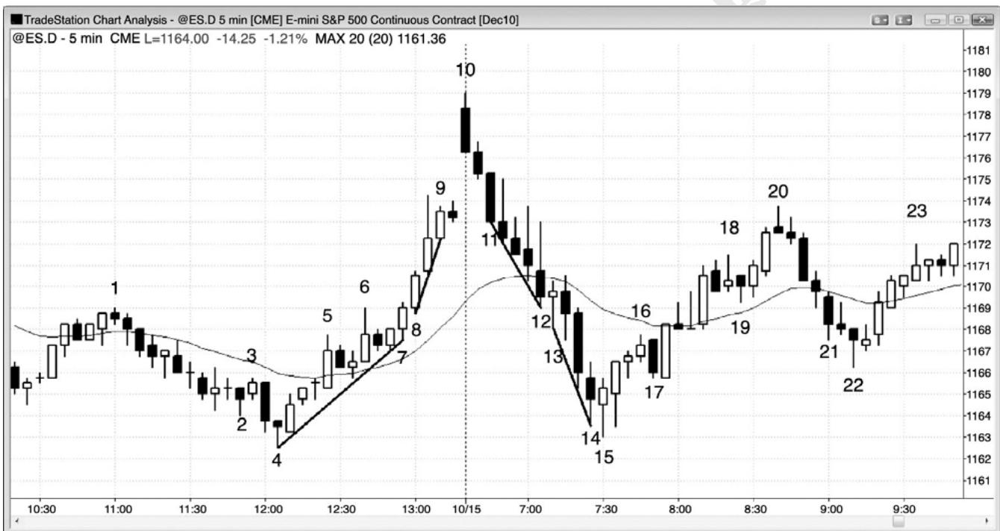
P91
一旦斜率增加，趋势就在加速，或许即将调整。这是因为，斜率的增加表明情绪越来越高涨，一旦情绪化交易者已经离场，就再没有人离场，也没有人愿意入场，直到出现回撤。图 4.15 中，从棒 8 开始的上涨运动比它前面的多头趋势陡峭，整个多头趋势结束于棒 10 处的上涨缺口空头反转。
从棒 13 开始的下跌运动比它前面的空头通道陡峭，这波卖出高潮在棒 15 强多头趋势棒处向上反转，棒 15 与截止棒 10 的多头上涨尖峰的起点棒 4 形成一个双重底。这两天形成一个巨大的上涨尖峰，然后一个巨大的下跌尖峰，形成一波大型买进高潮。高潮之后通常是交易区间，比如这里在截止棒10的两条腿反弹中。
当棒 14 前面的大型空头趋势棒形成时，既可看作一个突破，可能引起一波向下的测量运动，也可看作一波耗尽型卖出高潮，可能引起向上反转，持续大约 10 棒和两条腿。由于它形成于这样一系列陡峭的、没有调整的空头棒之后，所以很可能是非持续性行为的终点，因此是高潮行为。很多交易者等待开始买进，直到他们看到一条像这样的大型空头趋势棒。有人在那一棒的收盘买进，但是，由于非常靠近昨日低点，所以很多交易者选择等待，看市场是否有可能再小幅下跌。那些交易者们在棒 15 正在形成时、在它的收盘价及其高点上方买进。这是测试昨日低点（一个双重底重要趋势反转）的一个成功的卖出真空，买家控制市场。他们预期空头突破失败，棒 15 是失败突破的买进信号棒。在截止棒 15 的下跌中把他们的空头头寸波段化的空头，买回他们的头寸以获利，要是他们打算在上涨几个跳动或几棒后再次做空，那么他们是不会那样操作的。如果他们认为那波回撤将是短暂的，那么他们就不会持有空头头寸。强多头反转棒和入场棒表明反转很强，卖家在一旁观望了大约 10 棒。这使得市场成为单向市场，引起一波大型反弹。空头正寻找合理的架构再次做空，但在棒 20 之前一直没有找到。多头明白空头很可能介入，于是他们卖出自己的多头头寸以获利，计划在再次考虑买进前等待约 10 棒。他们在棒 22 低点 6 棒之后买进，那是在棒 22 低点与棒 17 低点构成的一个双重底中向上反转。它是一个更高低点重要趋势反转（截止棒 20 的反弹向上突破截止棒15 的空头趋势）和一个三角形（棒 4 和 15是头两次下推）。
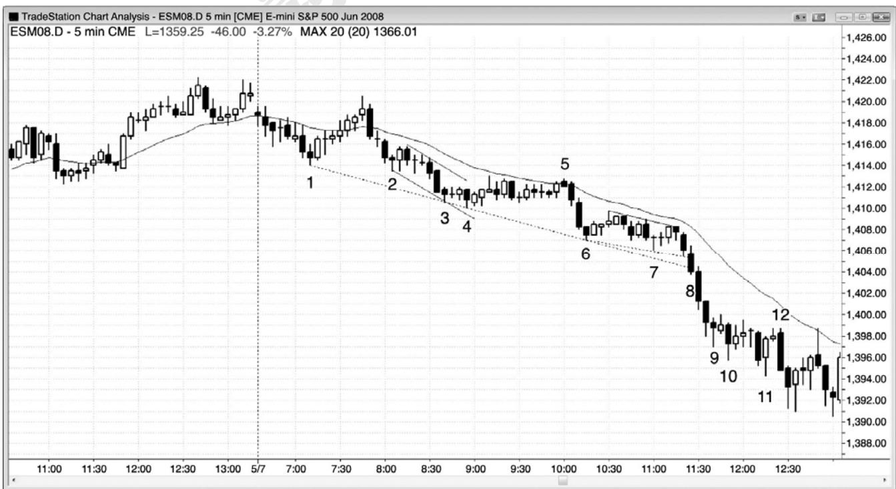
P92
当一个高潮形态未能形成任何逆势动能时，假定你读图错误，正打算在错误的方向交易。楔形反转不同于楔形回撤，尽管它们看起来是一样的。你需要注意形态出现的背景。如果多头趋势中出现一波楔形回撤，那么你可以在第一个信号买进，因为你是在多头趋势中买进。遗憾地是，当市场处于空头趋势中时，过于急切的多头把所有楔形底都看作回撤，但大部分是反转。当楔形是反转时，它是一种逆势交易，你应该在买进前等待一个更高低点，而且是仅在已经出现强趋势线突破之后。在强空头趋势中努力去做多头刮头皮，是一种失败的策略。
如图4.15所示，棒4完成一波从棒2和棒3开始的三推下跌，而且弹离一条从棒1到棒3 的空头趋势通道线。然而，市场横盘运动，而不是上涨。多头不强，所以表现上的过度看涨一点都不过度。每当出现一轮强空头趋势时，在出现一个更高低点之前，只寻找做空架构，总是更好的策略，即便买进，如果空头趋势形成一个低点 2 架构，你也需要准备做空。
直到收盘之前的最后几秒，棒 8 一直是一条多头反转棒，市场快速下跌，使其形成一条空头趋势棒。过于急切的多头认为它即将成为楔形和两条空头趋势线底部的一条多头反转棒，但结果却成为空头趋势通道线的空头突破，意味着现在每个人都认为市场还要进一步下跌。楔形反转失败后形成一系列空头趋势棒，确定了这一点。如果你观察价格行为，你就会看到多头反转棒暴跌形成空头趋势棒，那么你就会做空，知道有过早入场的多头被套，他们原以为那是一条离开空头趋势通道线的强多头反转棒（不要先于棒线操作；必须等待收盘和下一棒确认反转）。即便不知道这一点，在那个空头趋势通道线突破下方 1 个跳动处做空仍然是一笔明智的交易。
棒 11 是又一个三推下跌形态，但是，由于该形态包含很多十字星和大型重叠棒线，所以任何做多架构都需要二次信号，交易者们应该在带刺铁丝高点附近寻找小型棒做空（比如棒12，它显然套住了在一棒之前的多头反转棒入场突破做多的多头）。棒 11 是一条糟糕的多头反转棒，因为先前没有明显的多头力量向上突破空头趋势线，而且它与先前的棒线存在大量重叠，迫使你在一段空头交易区间的顶部附近买进（记住，低买，高卖！）。这是一个非常强的空头趋势日，最好的交易者们不会寻找楔形。相反地，他们会准备在均线附近做空。多头势弱，空头势强，聪明的空头会在每个失败的买进信号，以及低点 1 和低点 2 入场做空。
截止棒 2、3、6、9，以及从棒 12 开始，形成了连续的卖出高潮。下跌运动不是在一条紧凑的通道内，每次过度之后，市场都会横盘10棒左右，以释放过度产生的能量。这产生了一系列呈趋势变化的交易区间，这在强趋势中是很常见的，它妨碍了耗尽型高潮反转的产生。
图4.16 太多趋势通道线
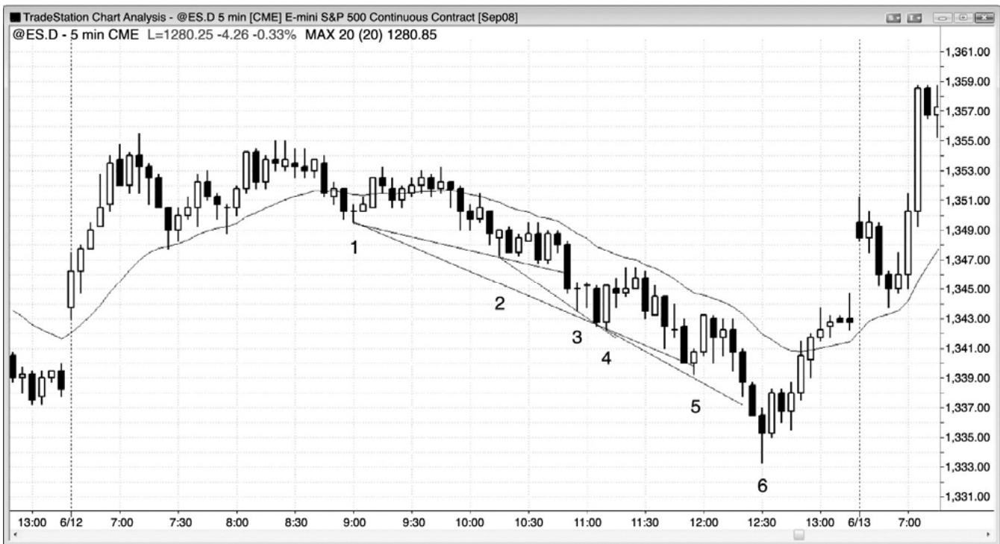
P93
每当你发现自己画了多条趋势通道线时，你难免会因不能相信正在发生的事情而变得焦躁不安，从而令你无法看清眼前发生的一切（见图 4.16）。尽管趋势处于空头通道内，而且通道包含大量双向交易，但是它们的持续时间比看起来要长得多。总要假定任意通道将会无限延长，一旦它最后不再继续，那么就改变你的观点。双向交易给出一种表象，即它不久将要反转，但是大部分反转尝试失败。趋势很强，你正在错过所有顺势做空架构，因为你所看到的是趋势通道线和潜在反转，你所考虑的是一个交易区间日内的过度抛盘（尖峰和通道形态中的通道看起来总是那样）。保持耐心，只做顺势交易，直到反转非常清晰、非常强劲，以致于你无需画线便可看到那种过度，比如大型棒 6 反转了昨日低点，是一个三推下跌形态（棒4、6、和 6）。不要根据你认为应该发生的事情去交易。只根据正在发生的事情去交易，即便那看起来是不可能的。正如在第一本书中关于通道的第15章所讨论的，当市场处于空头通道内时，聪明的交易者们仅在棒线下方买进，而不会在棒线上方买进；他们对做空的兴趣远大于做多，他们只打算在先前棒线的上方而不是下方做空。
图 4.17 反转处的成交量不是特别有用
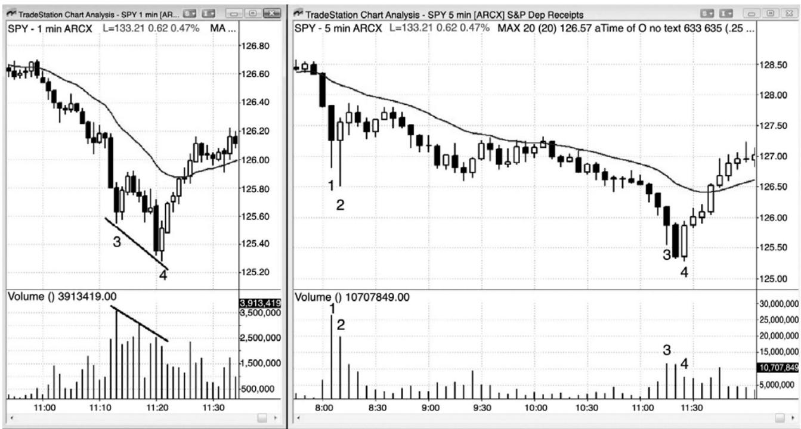
如图4.17中的右侧图表所示，5分钟SPY在棒3形成一波耗尽型卖出高潮，在棒4形成一个双棒反转，然后强势反弹超越均线。
左侧的 1 分钟图显示出低点处的成交量背离，那是很常见的。棒 4 低点处的成交量小于先前棒 3 低点处的成交量，尽管棒 4 是在一个更低的价位。很多振荡指标可能也显示出背离，但是经验丰富的交易者们不必观察 5 分钟图之外的任何图表就可知道那一点。
P94
传统技术分析称多头反转处的成交量应该大于最后一条空头棒的成交量。这里，在 5 分钟图上，棒 4 多头反转棒的成交量小于先前两条空头趋势棒的成交量。那将令反转的可靠性降低吗？一点不会。然而，那可能足以令交易者不在底部买进。在我交易时，我不想分心，我不会观察成交量或任何指标，因为图表已经告诉我所需的一切。顺便提一句，棒 2 的成交量远高于棒 4，但结果形成一个失败的反转，以一个双重顶空头旗形结束。
棒 3 的下尾线很长，表明买家正在进入；在尝试调整前，市场通常只会再下跌一两棒。棒 4 是一个很强的双棒反转，与棒 3 低点形成一个微型双重底。棒 3 是一种最终旗形，可能是较小时间框架图表上的一个最终旗形。